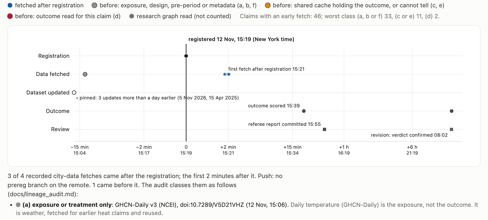

Did the registration come before the data?

33 of 46
claims with an early fetch, among 84 with a recorded fetch time, read only exposure, design or pre-period data
11
had the outcome in a cache built for an earlier claim, or cannot be told
2
read the outcome before registering; both disclosed it, neither is a blind test